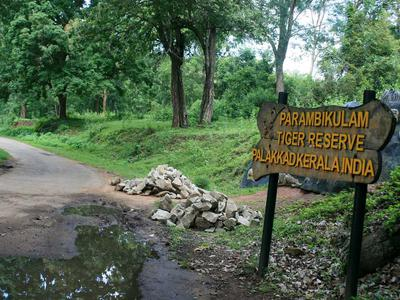
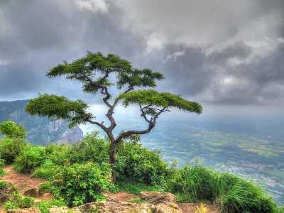
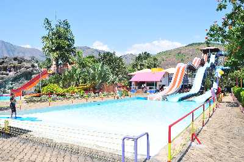
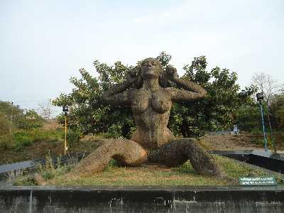
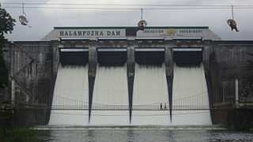
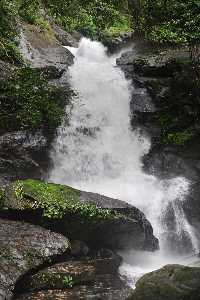
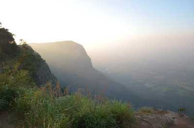

Parambikulam Tiger Reserve
Parambikulam Tiger Reserve and Wildlife Sanctuary, located in the Palakkad district of Kerala, is best known for its constant efforts to preserve the dwindling tiger population. Surrounding hills and river along with flora and fauna make it the perfect place for a trek and safari. The Parambikulam Tiger Reserve is the most protected ecological terrain of the Western Ghats. Endowed with peninsular vegetation and wildlife, this destination has minimum human interference. Some of the most prized animals found here include lion-tailed macaques, Bengal tigers, Indian leopards, wild boars, sloths, king cobra, Travancore kukri snake, and the Western Ghats flying lizard among others. Flora includes teak, sandalwood, neem and rosewood trees. This sanctuary is also home to four different indigenous tribes- Kadar, Malasar, Muduvar and Mala Malasar.
Silent Valley National Park

The Silent Valley National Park, with its lush green forests and beautiful views of the rich flora and fauna, is a popular destination for nature as well as wildlife lovers all across the globe. Spread across an area of 89 square kilometres, the Silent Valley National Park is located in the Kundali Hills of the Western Ghats in Kerala in southern India. With its long, detailed history and the unique status of a rainforest, this national park is indeed a sight to visit. The well-planned Safari and the beautiful stop-overs around the park only make a trip to this part of Kerala more worthwhile. A visit to this national park holds prominent significance for traveller and nature enthusiasts as this site is the last representative virgin tract of tropical evergreen forests in India. Though smaller in size when compared to the other national parks in India, what set the Silent Valley National Park apart from all other similar sites is the Sylvan environment that the region boasts of, along with its lofty and majestic peaks and the several rivers that run through its length.
Palakkad Fort

The Palakkad Fort in Kerala is a beautiful historical monument that has gently integrated its high walls with its surrounding green gardens. One of the most well-preserved forts in the state of Kerala, the Palakkad fort was built in the 1766 AD by Hyder Ali and is now a protected monument under the Archaeological Survey of India. This picturesque fort is located in the heart of Palakkad town at the foothills of the Sahyadris range in a labyrinth of dense forests and crisscrossing cascading rivers. The mighty fort is spread over an area of 60,702 square meters and is immensely famous for its architecture, which displays the efficiency of the French craftsman. The magnificent fortress of Pallakad is an essential part of history, and its construction is majestic as well
Seethargundu Viewpoint
Seethargundu Viewpoint is a famous point in the region. It is located on a cliff and offers a stunning view of the surroundings making it a perfect attraction for nature lovers and photographers. The dense forests all around the point are home to monkeys and other wild animals which one can spot, if lucky.
Fantasy Park
Fantasy Park is a themed amusement park in the region having a wide variety of exciting dry and water rides and slides to suit every age group and everyoneês choice. One of the most fascinating rides is the 16D Cine Magic Ride. Fantasy Park also has a Planetarium to titillate the curious minds, a food court for delicious delicacies and facilities to make the entire experience a memorable one.
Yakshi Statue
Yakshi Statue is a famous attraction in the Malampuzha Garden and a beautiful touch to the serene beauty of the garden. It is a stunning stone-carved piece of art created by a famous sculptor named Kanai Kanhiraman.
Malampuzha Dam
One of the largest reservoirs of Kerala, Malampuzha Dam is located near Palakkad in South India. It is surrounded by the Western Ghats on all side. Malampuzha Dam is a combination of a masonry dam with a length of 1,849 meters and an earthen dam with a height of 220 meters. The dam is 355 feet high and crosses the Malampuzha River, which is a tributary of Bharathappuzha, which is Kerala's second largest river. The dam has many attractions nearby like the rock garden, ropeway, amusement park and visitors often enjoy boating here as well. It is the largest reservoir in Kerala and is served by a network of two canal systems. Its construction was initiated in 1949, and it took about six years to finish the project. The foundation stone of the project was laid on 27 March 1949 by the then Public Works Minister, Sri. M. Bhaktavatsalam. During the time of its initiation, Palakkad was a part of Madras presidency. The dam was inaugurated on 9 October 1955 by the then Chief Minister of Madras, Sri. K. Kamaraj. Malampuzha Dam has a total catchment area of 145 square kilometers, and the reservoir has a capacity of 8000 square meters of water. The repository provides drinking water in the nearby areas while the canal system helps in irrigation.
Meenvallam Waterfalls
A magnificent 5 step waterfall in Kerala, Meenvallam Waterfall is one of the top 10 places to be in Palakkad. People often visit this place for a couple of hours, taking in the gushing water that falls from over 100-125 feet. Also known as Meenvallom, this waterfall is a great attraction especially during the winter and is definitely a sight not to be missed. Meenvallam waterfall is the final one out of the 10 between Palakkad and Mannarkkad. The waterfall passes through Kalladikode Hills and disperses into different falls near River Thuppanad. The best time to visit this attraction is after monsoons, in October when the weather is more manageable. What’s interesting about these waterfalls is that they are often kept a secret. Situated in dense and unknown forests, they are mostly out of reach. Nevertheless, Meenvallam Waterfall has become one of the major attractions in Palakkad and should be on your list
Nelliampathy
If you see the mist floating in the air and a pleasant aroma of coffee teasing your nostrils, a chain of majestic mountains peaking from all around and a wonderful weather relaxing your nerves, then you are not dreaming, you are in a small beautiful hill station of Kerala known as Nelliyampathy.